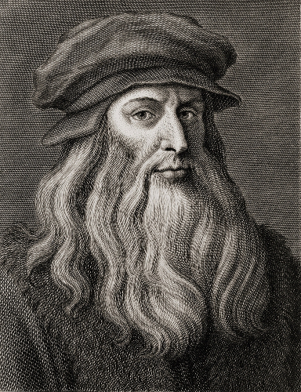
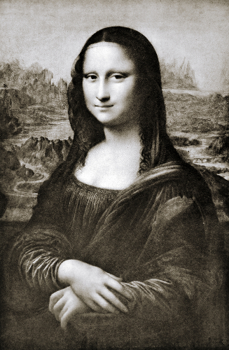
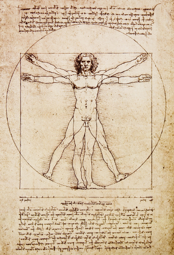

Biografia Leonardo da Vinci
Leonardo da Vinci é considerado um dos principais e mais completos artistas de todos os tempos.

A última ceia é uma das obras mais importantes de Leonardo da Vinci
Leonardo da Vinci é lembrado por ser um dos maiores gênios da história da humanidade. As suas contribuições ultrapassaram o ramo das artes e suas obras, como A Última Ceia e Mona Lisa, são algumas das pinturas mais famosas e reproduzidas de todos os tempos.
O artista é uma das figuras mais importantes da época do Renascimento – movimento de ordem artística, cultural e científica que ocorreu na Europa na passagem da Idade Média para a Idade Moderna (séculos XIV, XV e XVI).
Cientista e inventor, Da Vinci foi um homem à frente do seu tempo e realizou consideráveis estudos nas áreas de anatomia humana, escultura, óptica, matemática, arquitetura, engenharia civil, entre outras.
Vida
Ele nasceu em 15 de abril de 1452, na Vila de Vinci na Toscana, na Itália. Leonardo era filho da camponesa Caterina Lippi e do tabelião Piero da Vinci, que não eram casados. Foi educado por pessoas próximas, como a madrasta e a avó.
Vale destacar que, na verdade, Da Vinci não é o sobrenome de Leonardo. Usa-se essa denominação em razão de “Vinci” ser o nome do vilarejo onde ele nasceu, ou seja, é como se fosse “Leonardo da Vila da Vinci”.
Segundo estudos, ele tinha cabelos louros, olhos azuis, nariz aquilino e era canhoto. Quando jovem, muitos consideravam-no dono de uma incomparável beleza física. Porém, a imagem que a maioria guarda é do artista mais velho, como a do desenho feito por Cosomo Colombini em 1812.
Desenho de Leonardo da Vinci feito por Cosomo Colombini
Autodidata, Leonardo da Vinci passou a sua juventude na cidade de Florença, à época de efervescência cultural e artística. Depois, ele morou em Milão, Roma e, por fim, na França.
Desde sempre, ele registrava tudo em seus cadernos: rascunhos, pensamentos, emoções, planos e demais reflexões. Em algumas anotações, ele usava códigos.
Criativo ao extremo, o artista tinha especial habilidade para mesclar arte com ciência. Ele era, ao mesmo tempo, perfeccionista e procrastinador. Era vegetariano, por razões humanitárias.
Leonardo da Vinci morreu em 2 de maio de 1519, aos 67 anos, em Cloux, na França. Foi enterrado na igreja de Saint-Florentin, em Amboise.
Obra
Nas suas pinturas, o artista aperfeiçoou o uso do sombreamento (sfumato) e, na escultura, fez uso da perspectiva para modelar objetos em superfícies bidimensionais e tridimensionais.
Nas artes plásticas, Da Vinci foi um dos primeiros italianos a usar a técnica de óleo sobre tela. Suas pinturas retratavam, geralmente, rostos e temas religiosos.
Ele produziu pouco mais que 30 obras. Nem todas foram concluídas, tais como A adoração dos magos, São Jerônimo no deserto e a Batalha de Anghiari. Ele deixou centenas de desenhos, esboços e páginas de notas.
A pintura Mona Lisa, de Leonardo da Vinci, é uma das mais famosas do mundo
Veja abaixo as principais obras de Leonardo da Vinci:
Além de escrever nos seus cadernos, Da Vinci também desenhava neles. Uma das suas anotações mostrava espelhos côncavos que concentrariam raios de luz a partir de diversos ângulos, o que ajudou no estudo da Óptica, ramo da Física. Outra contribuição para essa disciplina foi ter desenvolvido teoremas iniciais de inércia, ação/reação e força.
O artista era fascinado pela natureza: adorava observá-la, admirá-la e estudá-la para ganhar conhecimento. Apreciava as infinitas obras e as harmonias dos padrões. Ele dizia que um bom artista também deveria ser um bom cientista para melhor compreender e descrever a natureza.
Curioso, Da Vinci gostava de investigar acontecimentos como o funcionamento dos moinhos, os voos dos pássaros, entre outros. Em 1498, ele fez a primeira tentativa de uma máquina voadora para os homens.
O Homem Vitruviano é um dos desenhos mais conhecidos de Leonardo da Vinci
Leonardo da Vinci tinha especial interesse pela anatomia humana. Ele passava noites inteiras em hospitais para entender o funcionamento do corpo. Fez diversos desenhos para ilustrar seus estudos, como de embriões, olhos, músculos e tecidos.
Outra de suas obras famosas é O Homem Vitruviano (1492), um desenho de uma figura humana com proporções perfeitas e com os braços e as pernas abertos dentro de um círculo e de um quadrado. Essa obra baseia-se em uma célebre passagem do arquiteto romano Vitruvius.